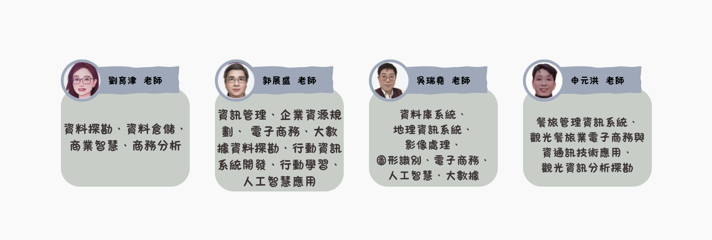

課程介紹
在高度商務競爭的時代，企業朝向數位轉型與商務傳播創新。大數據分析能讓企業利用內外部數據進行更優化的決策分析。
世新大學資管系培養程式設計能力，並以企業經營管理為基礎，再透過專案實作來加深學生分析資料的技能。課程內容包括程式與套件的撰寫與應用、資料的擷取與清理、人工智慧分析模型的訓練與建設，以及資料視覺呈現的繪圖技巧等。
在畢業專題製作課程中，同學也常將大數據、人工智慧等或其他資訊產品的設計作品結合商務傳播技巧，進一步傳遞作品的價值。
畢業生通常會選擇進入大企業的數據分析部門工作，不論是專精於資料清理的處理、人工智慧分析模型訓練的資料工程師，還是將分析結果進行視覺化繪圖，或提出商務決策建議的資料分析師等工作，都有相當好的薪資回報。
課程架構
領航員
